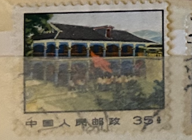
| SOURCE | TITLE| IMAGE MATCH | click to source page |
| Chinaculture.org | Site of the Zunyi Conference | 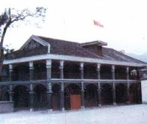 |
| It's Decided: Guizhou for the #NationalDay! A 7-Day Highlights Tour] Here's the ideal route for exploring Guizhou during the National Day holiday: start in #Guiyang → #HuangguoshuWaterfall → Libo #Xiaoqikong Scenic Area | 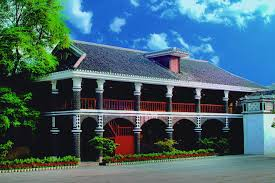 | |
| Wikipedia | Zunyi Conference - Wikipedia | 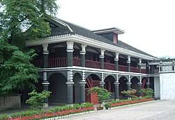 |
| eBay | Holy Site Zunyi City Red Army Picture Book China Culture Revolution 1975 Orig. | eBay | 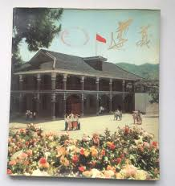 |
| The Architecture/Urban Planning Of Old Liberia: 1900s to 1910s... : r/Liberia | 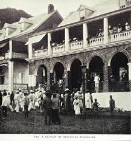 | |
| MSN | Paranormal secrets of Louisiana's haunted plantations | 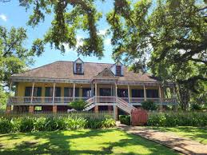 |
| Yelp | THE QUIET MON PUB - Updated February 2026 - 20 Reviews - St John, Virgin Islands - Pubs - Phone Number - Yelp | 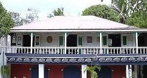 |
| Wikipedia | Bogor - Wikipedia | 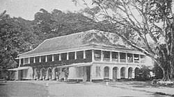 |
| Tripadvisor | Zunyi Meeting Site | 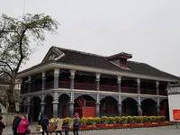 |
| I'd like to visit Laura Plantation. What are your comments on that ? Looking for info and a company that organises tours | 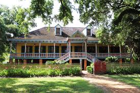 | |
| travelsichuanguide.com | Chishui Scenic Spot Visit-Guizhou China Travel Guide, Guizhou Highlights, Guizhou Discovery, Guizhou Attractio, Guiyang Tour, Village Tou, China Tou | 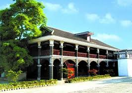 |
| Klook Travel | Private Guided Day Tour from Guiyang to Zunyi Conference Site and Lou Mountain Pass - Klook The Bahamas | 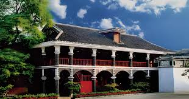 |
| Dispatch Argus | Prospect Park Pavilion gets $5K for repainting | |
| eBay | Stanford University Inn Building Palo Alto CA DB Postcard Vtg Unposted | eBay | 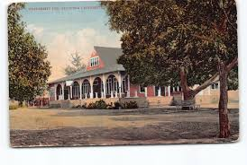 |
| Visit to City Hall Building to inspect the Town Hall Rehabilitation works . Georgetown, Guyana – Mayor Alfred Mentore, accompanied by Councillor Clayton Hinds and members of our administration team visited with | 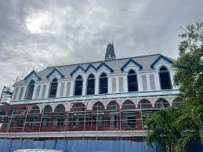 | |
| An educational day trip, just one hour from downtown New Orleans. By the mid-1800s, hundreds of working plantations stood between Baton Rouge and New Orleans along the Mississippi River. Tens of thousands | 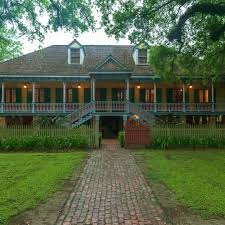 | |
| The Long March National Cultural Park: A Red Journey Where the Digital Meets the Natural] Now under construction, Guizhou's "Long March National Cultural Park" spans multiple cities and prefectures across the province, | ||
| Hotel Monteleone | Laura-Plantation - Hotel Monteleone | 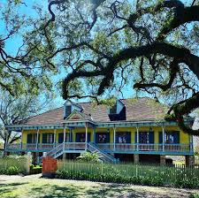 |
| Tarasha Designworks | All Products | Tarasha | 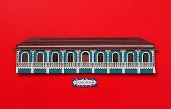 |
| Are there alligators in lake Martin | 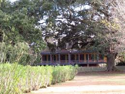 | |
| China Daily | Red history' helps guide the future - Chinadaily.com.cn | 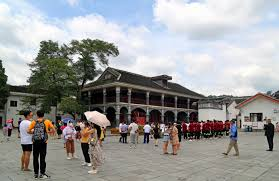 |
| China Culture.org | Zunyi Meeting Site | 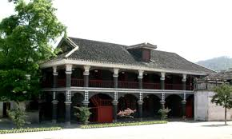 |
| University of Central Florida | View of the former House of Assembly from Emancipation Square in Spani" | |
| 日本経済新聞 | Goa's colonial mansions open doors on faded past - Nikkei Asia | 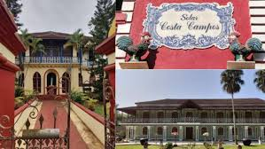 |
| eBay | UNIVERSITY INN Stanford University, California c1910s Vintage Postcard | eBay | 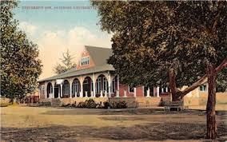 |
| Sun oak house in Marigny | New Orleans, LA | ||
| 公益財団法人ユネスコ・アジア文化センター - | The Twenty-fourth Regular Report | 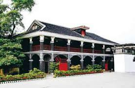 |
| US Mobile | Best Cell Phone Plans, Coverage & Stores In Longwood, FL 32752 | US Mobile | |
| Tripadvisor | Hospital - Picture of Caboolture Historical Village - Tripadvisor | 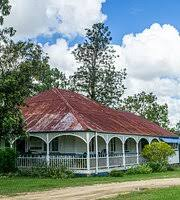 |
| Yelp | Places near Virgin Islands, Virgin Islands - Last Updated February 2026 - Yelp | 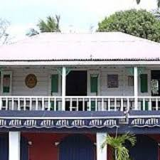 |
| Tripadvisor | 遵义会议 - Picture of Zunyi Meeting Memorial Museum - Tripadvisor | 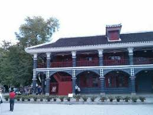 |
| Trip.com | 2026 Top 10 Bars in Zunyi | Trip.Best by Trip.com | 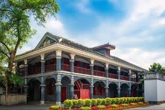 |
| TikTok | Every great achievement is a team effort.#CapCut#love#home#teamworkmak... | TikTok | 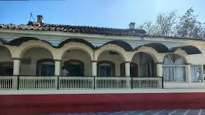 |
| Amazing Guizhou | Guizhou Tours and Guizhou Travel | 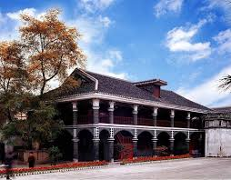 |
| Trip.com | Zunyi Conference + Red Army Street + Great Turn Performance [Small group of 2-15 + in-depth guide] | Trip.com | 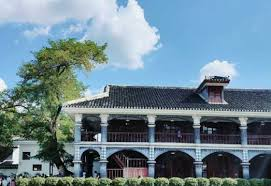 |
| The Site of Zunyi Conference is a famous red tourism scenic spot in China. This year marks the 90th anniversary of the Zunyi Conference. It's actually established Mao Zedong's leading position and | 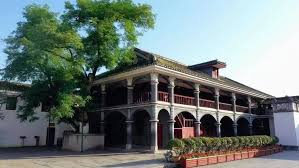 | |
| fali Yang (yangfali) - Profile | Pinterest | 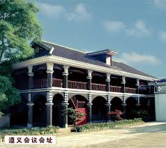 | |
| Find Your Stamps Value | Mao's Home and Office, Yunnan - 毛的家和办公室，云南4f Multicolored stamp price, value | 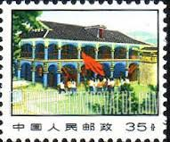 |
| chinesestamp.org | R14/PU14/普14, Regular Issue with Designs of Revolutionary Monuments (3rd Print)《革命圣地图案普通邮票（第三版）》 - Chinese Postage Stamps | China Postage Stamps | Chinese Stamp Album | China Philatel | ACPF | Stamps Catalogue of PRC | | 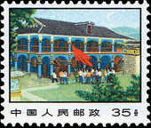 |
| Tripadvisor | Southern Style Tours (2026) - All You MUST Know Before You Go (with Reviews) | 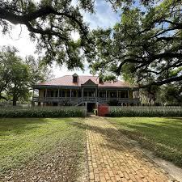 |
| History of Brian's Park Place Pub in Pittsburgh's Park Place neighborhood | 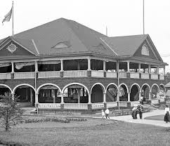 | |
| China.org.cn | AN Illustrated History of the Communist Party of China-china.org.cn | 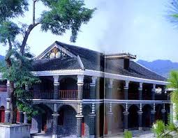 |
| Zhangjiajie Holiday China Tour & Travel | Site of Zunyi Conference - Guizhou Attractions - Zhangjiajie Holiday China Tour & Travel | 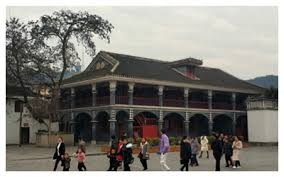 |
| Escambray | More than half a Million Pesos Invested in the Valley of the Sugar Mills – Escambray | 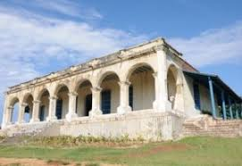 |
| Budget Maldives | Places billionaires vacation - Maldives Resorts to vacation like a billionaire | |
| Tripadvisor | Royal Carriages (2026) - All You MUST Know Before You Go (with Reviews & Photos) | |
| Yelp | HENLEY'S PRIVATE TOURS - Updated February 2026 - 16 Photos & 14 Reviews - 3949 Lolan Ct, Marrero, Louisiana - Architectural Tours - Phone Number - Yelp | 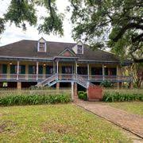 |
| Explore Louisiana | Historic Districts & Sites in St. Francisville Louisiana | Explore Louisiana | 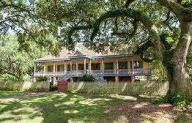 |
| Everyday Life in Mao's China | The Zunyi Meeting Memorial, Postcard 1980 – Everyday Life in Mao's China | |
| YouTube | LAURA PLANTATION (Creole Plantation in Vacherie, Louisiana) - YouTube | |
| Viator | New Orleans: Louisiana Swamp and Laura Plantation Tour 2026 | 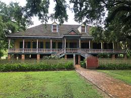 |
| The President's Office | The Presidential Address 2023 - The President's Office | |
| Artnet | Emilio Sanchez | Artnet | 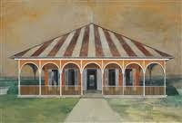 |
| Tripadvisor | Oak Alley Plantation tour better than Laura Plantation - Review of Laura Plantation: Louisiana's Creole Heritage Site, Vacherie, LA - Tripadvisor | 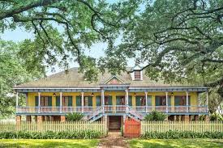 |
| Flickr | Pattawee Otus | Flickr | 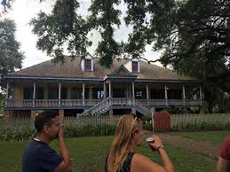 |
| eBay | University Inn Stanford University Palo Alto CA California Divided Back Postcard | eBay | 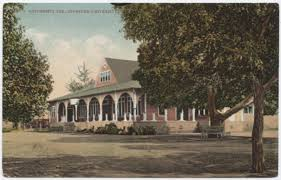 |
| WVIK, Quad Cities NPR | Moline City Council | WVIK, Quad Cities NPR | 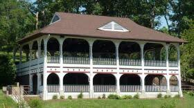 |
| Do you count rides rebuilt or replaced by their original date? | 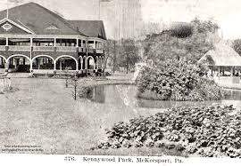 | |
| eBay | Missouri Mo Postcard c1910 SEDALIA Pettis County CONVENTION HALL Liberty Park 11 | eBay | 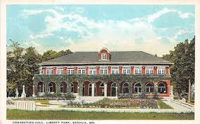 |
| Trip.com | Zunyi Private Day Tour: Visit the Zunyi Conference Site and Experience the Spiritual Power of the Great Turning Point | Trip.com |